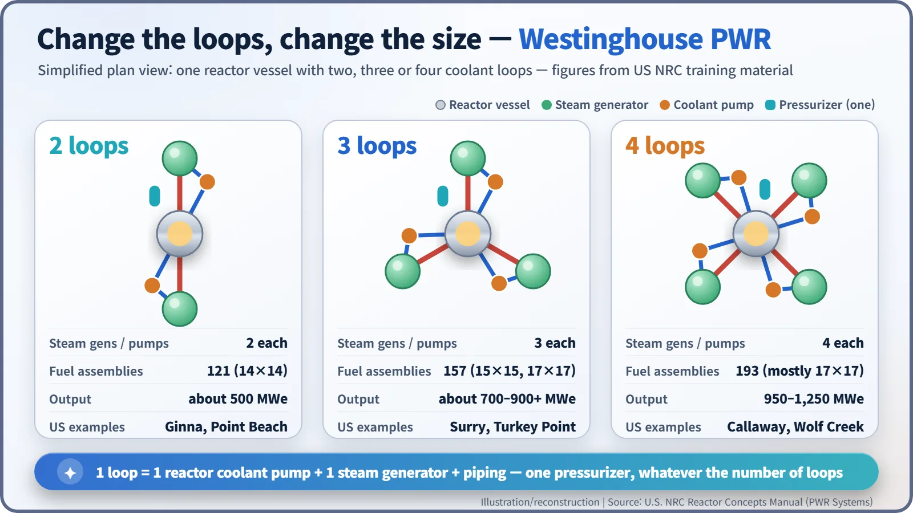
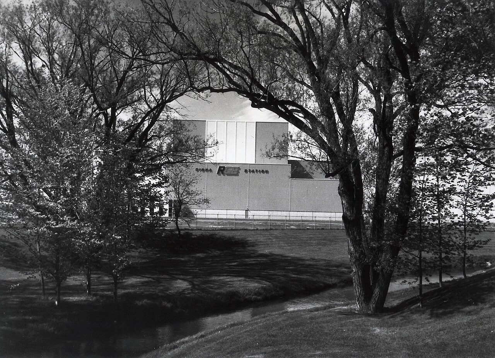
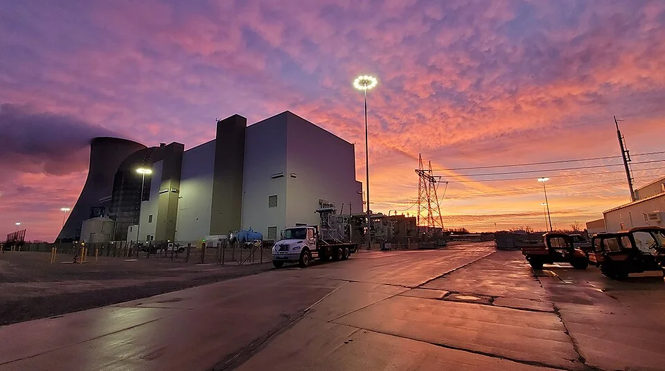
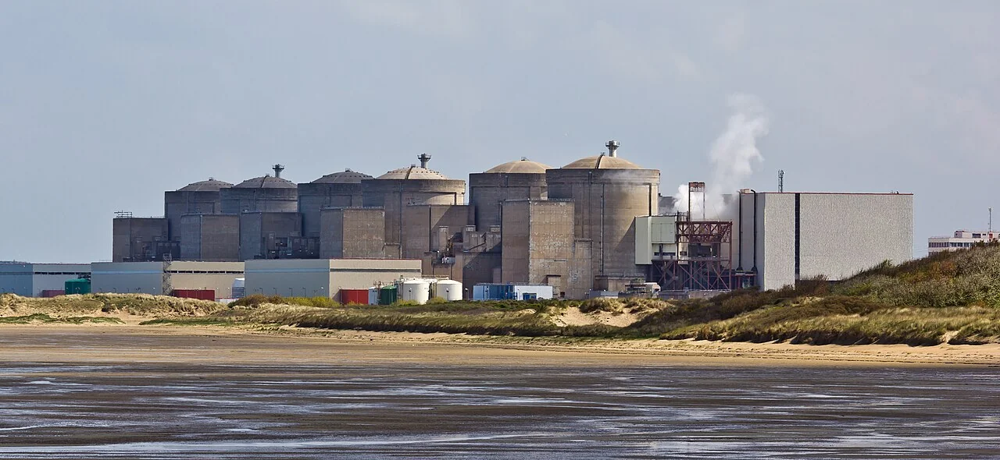
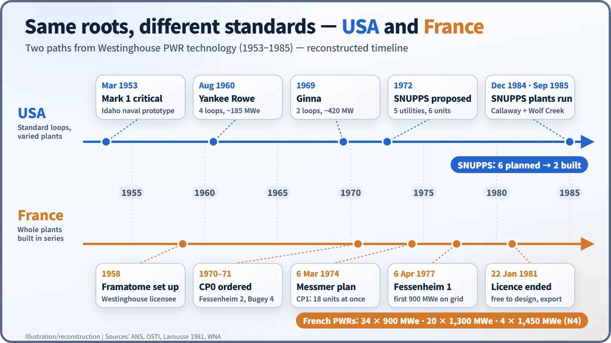

Nuclear History · 202
"How Many Loops Would You Like?" — Westinghouse and the Standardization of the Pressurized Water Reactor
From a submarine prototype to two-, three- and four-loop product lines, and two very different ideas of what a standard nuclear plant should be.
Born in the US Navy's submarine programme, the Westinghouse pressurized water reactor was sold in two-, three- and four-loop versions, each loop being one coolant pump plus one steam generator. In the 1970s a group of US utilities tried to go further with an identical plant design, SNUPPS, but only two of six units were built. France took the same technology and built whole power stations in long identical series, reaching what the World Nuclear Association calls the highest degree of standardization in the world.
"How many loops would you like?"
Imagine a US electric utility in the late 1960s, shopping for a nuclear plant at Westinghouse. The sales conversation might have been surprisingly short: around 500 megawatts means a two-loop plant, eight hundred or so means three loops, over a thousand means four. Much as a carmaker offers one design with four, six or eight cylinders, Westinghouse sized its reactors by adding or removing loops. This is how the pressurized water reactor (PWR), which today accounts for about 69% of the world's nuclear generating capacity, became something close to a catalogue product. (The sales pitch is an imagined scene, not a quotation.) [4]
A design that came from the sea
The story starts with the US Navy. Late on the night of 30 March 1953, in the Idaho desert, the Navy's land-based prototype reactor Mark 1, designed by Westinghouse's Bettis laboratory, went critical for the first time. The programme was driven by Admiral Hyman G. Rickover (1900–1986). Its technology went on to power the submarine Nautilus and the Shippingport demonstration power station. [4]
A PWR keeps its cooling water under very high pressure so that it does not boil even above 300 °C while it carries heat away from the core. Westinghouse's first fully commercial PWR, Yankee Rowe in Massachusetts (first criticality 1960), had four loops even though it produced only about 185 MWe. In other words, the neat match between number of loops and plant size was not there from the start; it became clear only as plants grew larger. [4] [1]
What is a loop?
The US Nuclear Regulatory Commission (NRC) defines it in its training material: "A reactor coolant loop is a reactor coolant pump, a steam generator, and the piping that connects these components to the reactor vessel." Hot water flows from the reactor to a steam generator, where it boils water in a separate secondary circuit; the pump then pushes the cooled water back into the reactor. A single pressurizer controls the pressure, however many loops there are. [1]
According to the same source, Westinghouse two-loop plants in the United States hold 121 fuel assemblies and produce about 500 MWe; three-loop plants hold 157 assemblies and produce "from almost 700 to more than 900 megawatts"; four-loop plants hold 193 assemblies and produce "950 to 1250 megawatts". Sharing the designs of the main components made it easier to manufacture parts and pool operating experience. Other vendors chose differently: Combustion Engineering and Babcock & Wilcox plants have only two steam generators but four reactor coolant pumps. [1]


Utilities pool their drawings
Standard loops did not mean standard plants. Building layouts and auxiliary systems still differed from one utility, and one architect-engineer, to the next. In 1972 Wade Larkin of Northern States Power proposed going further: build the same plant at several sites. The result was SNUPPS, the Standardized Nuclear Unit Power Plant System. [2]
Five utilities joined, planning six units at four sites in four states: two at Callaway (Missouri), two at Tyrone (Wisconsin), one at Wolf Creek (Kansas) and one at Sterling (New York). In 1973 Bechtel was hired as architect-engineer and Westinghouse to supply the four-loop nuclear steam supply system. Because the design was identical, the common safety issues could be reviewed once rather than plant by plant. [2] [3]
The outcome was half a success. Slowing growth in electricity demand, inflation and soaring capital costs led to cancellations, and only Callaway Unit 1 (commercial operation December 1984) and Wolf Creek (September 1985) were built. According to the American Nuclear Society, Wolf Creek's estimated cost rose from $1 billion to $2.9 billion, while savings from standardization were reported in 1985 at about $214 million. [2]

France stamped out whole plants
France took the same Westinghouse technology down a very different road. Framatome was founded in 1958 to bring in Westinghouse PWR technology. After France abandoned its own graphite-gas reactor line in 1969, Électricité de France (EDF) ordered six PWRs in 1970–71: two at Fessenheim and four at Bugey. [5]
The turning point was the oil crisis. On 6 March 1974 Prime Minister Pierre Messmer announced a massive nuclear programme, and that same year 18 almost identical 900 MWe units were ordered under a single contract; a further 10 followed in 1976. One customer (EDF) and one supplier (Framatome) made this kind of series ordering possible. Fessenheim 1, the first of the 900 MWe class, was connected to the grid on 6 April 1977. [5]

On 22 January 1981 the licence agreements between the two companies were cancelled. A French yearbook noted at the time that "Framatome can now freely export nuclear power plants all over the world" (translated from French). France went on to build 34 three-loop 900 MWe units (32 remain after Fessenheim's two units closed in 2020), 20 four-loop 1,300 MWe units and four units of its own N4 design at about 1,450 MWe. The World Nuclear Association calls this "a higher degree of standardization than anywhere else in the world". [6] [5]

What exactly was standardized?
It is often said that the United States "failed" to standardize. It is more accurate to say the two countries standardized at different levels. Westinghouse standardized the main components, loop by loop; France copied entire power stations. The United States later introduced advance certification of standard designs (10 CFR Part 52, 1989), and Britain's Sizewell B was built on a heavily modified SNUPPS design. The debate that began with two, three and four loops lives on today in plans to factory-build small modular reactors (SMRs).